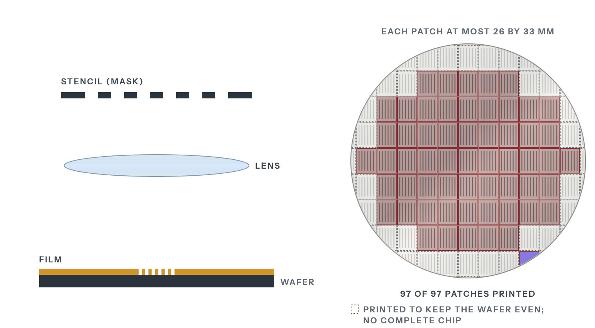

Chapter 04Stage 4 of 14Extreme concentrationVery hard to substitute
Lithography
ASML, a Dutch firm, is the only maker of extreme ultraviolet scanners, the machines that print the finest layers of a chip. It sold 48 of them in 2025.
Sharma, Yashvardhan. “Lithography.” Chip Supply Chain: How AI Chips Are Made. Updated 27 October 2026. https://chipsupplychain.org/lithography/
The interactive chapter adds a 3D model, glossary definitions and flashcards.
An extreme ultraviolet scanner cut open along its light path. The machine is the size of a bus and weighs about 180 metric tons. The blue-violet thread is the 13.5 nm light, bouncing mirror to mirror from the violet-white tin plasma at bottom left to the wafer. The mask at the top and the wafer at bottom right are drawn about twice their true size.
Parts, as numbered on the drawing
- 1Light source: ASML San Diego (US), laser by Trumpf (DE)
- 2Mirrors: Zeiss SMT (DE)
- 3Mask: see stage 05, Photomasks and Pellicles
- 4Wafer: see stage 02, Silicon and Wafers
In plain terms
Lithography prints the pattern of a circuit onto the wafer. A machine holds a stencil of one layer of the circuit up to a light source and projects the image, four times smaller, onto the silicon. The shorter the wavelength of the light, the finer the lines a machine can print. Even so, a machine can print lines narrower than its light's wavelength. Immersion scanners, for example, shine the light through a layer of water between lens and wafer, which lets them print smaller features with the same light[1]. ASML rates its NXT:2150i immersion scanner at features of 38 nanometers or less with 193-nanometer argon fluoride laser light[2]. Air soaks up extreme ultraviolet light, the shortest in use, so machines that print with it work in a vacuum. Only ASML, a Dutch company, makes them. Export controls are government rules on who a company may sell to. Every advanced chip passes through ASML's machines, so export controls on ASML affect all advanced chipmaking.
In short
ASML is the only company that makes extreme ultraviolet (EUV) scanners[3]. It also holds above 80 percent of the market for deep ultraviolet (DUV) lithography, which uses light of longer wavelength than EUV[4]. ASML says the production capacity of Zeiss, its sole supplier of optics, limits how many lithography systems it can build[5].
Export controls set up by the United States with allies including the Netherlands block EUV scanners from Chinese chip foundries[6]. In December 2025 Reuters reported a Chinese prototype that had made EUV light but had printed no chip[7]. In July 2026 Reuters reported, citing one unnamed source, that a Shanghai firm with two state shareholders has started producing immersion DUV tools, which shine their light through water[8].
ASML sold 327 lithography systems in 2025, 48 of them extreme ultraviolet (EUV)[9]. Nobody else makes EUV systems[3].
- Who leads
- Where it is made
- NLNetherlands ASML, the Dutch maker of every EUV scanner
- DEGermany Zeiss SMT optics, Oberkochen, and Trumpf carbon dioxide drive lasers, Ditzingen
- USUnited States ASML light-source research and manufacturing, San Diego
- JPJapan Nikon and Canon lithography scanners and steppers
Chinese firms have begun small-batch production of immersion DUV scanners, but none has yet been shown fit for producing advanced chips, the Center for Technology & Statecraft found in September 2026[13]. Its central estimate in 2026 was that China would have a commercially viable immersion scanner for 7 nm chips in the mid-2030s, with the early 2030s plausible, and EUV not before the second half of the 2030s[13]. Meanwhile Chinese fabs had built a stockpile of more than 330 immersion DUV systems by the first quarter of 2026, most of them ASML's NXT:1980i[13].
No American firm makes lithography scanners, CSET found in 2021[14]. But every immersion DUV scanner holds a light source from Cymer, a US company now part of ASML, or from Japan's Gigaphoton, so the two governments could stop sales by controlling those parts, the Center for Technology & Statecraft found in September 2026[13]. A US rule published in October 2023 already covers immersion scanners with an alignment error between 1.5 nm and 2.4 nm bound for advanced chipmaking if they hold any American-made parts[15]. The US entity list also requires a license to supply the firms it names[16].
How it works
The stencil is called a photomask, and the machine a scanner (see Photomasks and pellicles).
The wafer is coated with photoresist, a film that changes wherever light touches it. The mask holds one layer of the circuit as a pattern of clear and dark areas, drawn at four times its size on the chip. The machine shines light through the mask, shrinks the image four times with a lens, and lands it on the film.
A wash then removes the film where the light hit, or, with some films, where it did not, leaving the pattern standing on the wafer[17]. The film then serves as a stencil for the next step, which either etches the pattern into the layer beneath or fires ions into the open areas to change how the silicon conducts[17]. Then the film is stripped and the next mask goes in. Chips are made up of dozens of layers, ASML says[17]. Photronics, a US mask maker, says masks are typically sold in sets, with each layer's pattern on a different mask[18].
How lithography prints a chip

- Coat. The wafer is coated with a thin film that changes wherever light touches it.
- Stencil. A stencil, called a mask, holds the pattern for one layer of the chip, drawn four times larger than life.
- Shrink. Light shines through the stencil, and a lens shrinks the image four times and lands it on the film.
- Wash. A wash removes the film wherever the light landed, and the pattern is left on the wafer.
- Repeat. The machine steps across the wafer, printing one patch at a time, each about the size of a postage stamp.
Sharma, Yashvardhan. “Figure 04.1: How lithography prints a chip.” Chip Supply Chain: How AI Chips Are Made. Updated 27 October 2026. https://chipsupplychain.org/lithography/#fig-lithography-litho-print
The image from one mask covers a patch of up to 26 by 33 mm[19]. The wafer moves under the optics one patch at a time, close to a hundred patches per wafer. ASML's own wafers-per-hour rating for an EUV scanner assumes 96 of them[19]. Before the wafer is exposed, the machine measures alignment marks printed in earlier layers so the new layer lines up with them[19]. For its NXE:3400B EUV scanner, ASML rates the matched-machine overlay, a measure of that alignment, at 2 nm[19]. That model first shipped in 2017[20].
Finer lines need shorter light. Glass and air both absorb the shortest light in use, at 13.5 nm[21]. So an EUV scanner works in a vacuum and uses mirrors instead of lenses, and its masks are mirrors too[21]. Deep ultraviolet (DUV) machines use light with a wavelength more than fourteen times longer[12]. ASML calls its immersion DUV scanners the workhorses of the industry, used in high-volume manufacturing of the most advanced logic and memory chips[22].
When one exposure cannot draw a pattern finely enough, chipmakers use multipatterning. In the litho-etch kind, the pattern is split between two or more masks printed in turn[23]. Each added mask brings more process steps, more cost and a risk that the parts of the pattern misalign[24]. Self-aligned double and quadruple patterning (SADP and SAQP) print the lines with one exposure and then multiply them with deposition and etch steps[23]. In SAQP each printed line ends up as four[23]. Because one exposure places all those lines, they cannot misalign with each other[23]. A later exposure still prints blocks that break them where the circuit needs gaps[23]. ASML says one EUV exposure per layer cuts masks and process steps and lowers cost[3].
Variants and trade-offs
Deep ultraviolet
Deep ultraviolet (DUV) light comes from gas lasers called excimer lasers: 248 nanometers from krypton fluoride (KrF), 193 from argon fluoride (ArF), shone through air or water[12]. Cymer, an independently run ASML business in San Diego, makes these excimer lasers, which generate the light that scanners use to print patterns on wafers[25]. Gigaphoton, a Komatsu company in Japan, also makes excimer lasers for lithography tools[26].
Of the systems ASML sold in 2025, 131 were ArF immersion, 78 KrF and 16 ArF dry, all deep ultraviolet, and another 54 were older i-line tools[27]. The i-line tools use 365 nm light from a mercury lamp, and ASML says they print features as small as 220 nm[12].
Reuters gives one price for the whole DUV segment, with tools costing roughly $60 million each[4]. ASML's own figures split its DUV sales by tool type. In 2025 the 131 ArF immersion tools it sold made up 42 percent of its system sales, and the 78 KrF tools only 4 percent[27]. In DUV, ASML competes with Nikon and Canon, and it still holds above 80 percent of that market[4].
Chipmakers without EUV build their finest layers on immersion DUV scanners, in several passes per layer[3]. From 1 September 2023, Dutch export licensing covered the most advanced of these scanners, ASML's NXT:2000i and later models[28].
Extreme ultraviolet
The 13.5 nm light comes from molten tin droplets shot from a generator[12]. A laser hits each droplet twice, first with a low-intensity pulse that flattens it and then with a more powerful one that vaporizes it into plasma[12]. The process repeats 50,000 times a second[12]. Mirrors made by Zeiss, a German optics company, carry the light to the wafer[1]. The largest are a meter across and smooth to within tens of picometers, a picometer being a thousandth of a nanometer[1].
Brighter light means more wafers an hour, and ASML demonstrated the first 1,000-watt EUV source in April 2025[29]. Its TWINSCAN NXE:3800E ships at its full 220 wafers an hour, 37 percent more than the NXE:3600D[30].
High-NA EUV
High-NA scanners raise the numerical aperture (NA), a measure of how well the optics collect and focus light, from 0.33 to 0.55[31]. That cuts the smallest printable feature from 13 nm to 8 nm[31]. Their optics shrink the mask image four times in one direction and eight in the other, halving the patch of wafer one exposure covers and doubling the exposures per wafer[31]. The second-generation TWINSCAN EXE:5200B runs at 175 wafers an hour, 60 percent above the EXE:5000[3].
Reuters puts a standard EUV tool at around $200 million and a High-NA machine at an estimated $350 to $400 million[4].
High-NA EUV scanners cost an estimated $350 million to $400 million in 2026
What one lithography system costs. The DUV bar is one figure for the whole segment, and the High-NA bar shows the low end of an estimated $350-400M range
| DUV tool | $60M |
|---|---|
| EUV, 0.33 NA | $200M |
| High-NA EUV | $350M |
Sharma, Yashvardhan. “Figure 04.2: What one lithography system costs. The DUV bar is one figure for the whole segment, and the High-NA bar shows the low end of an estimated $350-400M range.” Chip Supply Chain: How AI Chips Are Made. Updated 27 October 2026. https://chipsupplychain.org/lithography/#fig-lithography-tool-price
ASML sold four High-NA (EXE) systems in 2025, against two in 2024[32]. In its 2025 annual report, filed in February 2026, ASML said it expected High-NA to start supporting high-volume manufacturing in 2027[5].
Intel and TSMC have chosen differently on High-NA:
- Intel Foundry says it uses High-NA in volume production for select layers of some Intel 18A products[33]. It installed the first EXE:5200B[34]. By September 2026 it had run more than one million wafers on High-NA tools, a count that includes tool testing and research as well as volume production[33].
- TSMC waited, and in September 2026 said it will use High-NA in high-volume manufacturing from 2030[35].
On 8 September 2026 ASML and TSMC announced a move from 6-inch photomasks to 12-inch ones, to remove stitching constraints[35]. Stitching constraints are the design limits that come from printing a large chip in two halves. ASML and TSMC aim for a pilot line for the new masks by 2031 and for High-NA systems that use them to enter production by 2033[35].
| 2023 | 53 tools |
|---|---|
| 2024 | 44 tools |
| 2025 | 48 tools |
Sharma, Yashvardhan. “Figure 04.3: EUV systems ASML sold each year.” Chip Supply Chain: How AI Chips Are Made. Updated 27 October 2026. https://chipsupplychain.org/lithography/#fig-lithography-euv-shipments
Who makes it
ASML's net sales were EUR 32.7 billion in 2025, at a 52.8 percent gross margin[9]. In October 2026 it expected 2026 net sales of EUR 44 to 45 billion, at a gross margin of around 56 percent[36]. Its 2025 annual report lists 5,100 suppliers[5]. Three of them and ASML's own San Diego site make the main parts of the EUV machine:
- Zeiss SMT, Oberkochen, Germany, makes the illumination system and the six-mirror projection optics[37].
- Trumpf, Ditzingen, Germany, makes the carbon dioxide drive laser that hits the tin droplets[38]. It amplifies a few watts to 40 kilowatts[38].
- ASML San Diego, which includes the light-source maker Cymer that ASML bought in 2013, designs the source where the laser turns tin into plasma, and builds the droplet generator[25].
- VDL ETG builds the frames that suspend and position the mirrors[39].
ASML says the production capacity of Zeiss, its sole supplier of optics, limits how many lithography systems it can build[5].
Lithography is the stage of the chain that European firms lead, with ASML the only maker of EUV scanners[3]. The bulk of ASML's suppliers are in the Netherlands and the rest of Europe, the Middle East and Africa, the company says[40].
In Japan, Nikon and Canon also make lithography tools. Nikon sold 22 new chip lithography systems in the year to March 2026, in a market it sizes at 570 units for 2025[10]. Its Precision Equipment business made an operating loss in the year to March 2026[41]. Canon sold 234 chip lithography systems in 2025, 188 of them i-line and 46 KrF[11]. Its range runs from KrF scanners to i-line steppers, including some built for advanced packaging[42]. Canon also makes a nanoimprint system, the FPA-1200NZ2C, which stamps the pattern instead of projecting it and can print lines down to 14 nm wide[43]. Canon delivered one in 2024 to the Texas Institute for Electronics, to be used for research and prototypes[43].
In January 2021 CSET, a research center at Georgetown University, found that the United States lacked firms in a few key parts of the chip supply chain, above all lithography tools[14].
EUV made up 48 percent of ASML's 2025 system sales
ASML net system sales by technology, 2025
| EUV | 48% |
|---|---|
| ArF immersion | 42% |
| KrF | 4% |
| Metrology and inspection | 3% |
| ArF dry | 2% |
| i-line | 1% |
Sharma, Yashvardhan. “Figure 04.4: ASML net system sales by technology, 2025.” Chip Supply Chain: How AI Chips Are Made. Updated 27 October 2026. https://chipsupplychain.org/lithography/#fig-lithography-litho-mix
Controls and China's answer
Export controls set up by the United States with allies including the Netherlands block ASML from shipping EUV scanners to Chinese foundries[6]. In September 2025 CSIS judged that EUV remained "firmly out of reach" for China despite massive state investment[6]. For DUV scanners and other tools, the restrictions came in this order:
- Dutch national licensing of advanced DUV took effect on 1 September 2023[44].
- A US rule published on 25 October 2023 covered immersion scanners that print features of 45 nm or smaller with an alignment error between 1.5 nm and 2.4 nm[15]. If such a scanner was bound for advanced chipmaking, the rule put it under US export rules when it held any American content at all[15]. The rule did not apply to scanners first exported from a country that lists them on its own export control list[15].
- A partial license revocation by the Dutch government, disclosed by ASML on 1 January 2024, stopped shipments of NXT:2050i and NXT:2100i immersion scanners to a few Chinese customers[45].
- The Netherlands widened its licensing to more types of deep ultraviolet lithography equipment from 7 September 2024[44]. On 15 January 2025 it announced that from 1 April 2025 the license requirement would also cover a very limited number of further goods, among them specific measuring and inspection equipment[46].
- The BIS Affiliates Rule, issued by the US Bureau of Industry and Security, extended entity-list controls to affiliates owned 50 percent or more by listed entities from 29 September 2025[16]. BIS then suspended it until 9 November 2026[47]. Exporting goods covered by US export rules to a firm on the entity list needs a US license[16].
- The EU added certain Dutch controls to the EU Control List in November 2025[5]. ASML says this changed nothing for its immersion tools, because they already needed a Dutch license[5].
China's share of ASML's net system sales fell from 41 percent in 2024 to 33 percent in 2025[27].
On DUV, Reuters reported in July 2026, citing one unnamed source, that Shanghai Aishengna Electronic Technology Group has started producing home-grown immersion DUV tools[8]. The firm was registered in August 2023 with 7 billion yuan of capital and two state shareholders, Shanghai Electric Holding and a Shanghai International Trust subsidiary[8]. It has no website and has taken in teams from SMEE, China's older scanner maker, and the startup Yuliangsheng[8]. SMEE is strongest in i-line, the coarsest kind of lithography tool, and even there holds only four percent of the world market[6].
The Center for Technology & Statecraft, a research group, found in September 2026 that none of China's home-grown immersion scanners had yet been shown fit for producing advanced chips[13]. Its central estimate was a commercially viable Chinese immersion scanner for 7 nm chips in the mid-2030s, and EUV not before the second half of the 2030s[13]. Until then Chinese fabs rely on imported tools, and by the first quarter of 2026 they had built a stockpile of more than 330 immersion DUV systems, most of them ASML's NXT:1980i[13].
There is less evidence of Chinese progress on EUV. Reuters reported in December 2025 that a Shenzhen team of former ASML engineers had built a prototype that made extreme ultraviolet light but had printed no chip[7]. To print a chip, a machine also needs mirrors that carry that light to the wafer, and ASML's sole supplier of those mirrors is Zeiss[5].
China took 33 percent of ASML's 2025 system sales, the largest share
ASML net system sales by the region tools shipped to, 2025
| China | 33% |
|---|---|
| South Korea | 25% |
| Taiwan | 22% |
| United States | 12% |
| Japan | 5% |
| Rest of Asia | 2% |
| EMEA | 1% |
Sharma, Yashvardhan. “Figure 04.5: ASML net system sales by the region tools shipped to, 2025.” Chip Supply Chain: How AI Chips Are Made. Updated 27 October 2026. https://chipsupplychain.org/lithography/#fig-lithography-asml-region
The chokepoint
If ASML stopped shipping, no fab anywhere could add EUV capacity, because no other company makes EUV scanners[3]. The scanners already in fabs would keep printing only as long as they were serviced. ASML has around 10,000 customer support employees who maintain and upgrade those machines around the clock[48]. Serviced this way, ASML's machines stay in use for a long time. In its 2025 annual report ASML said about 95 percent of the systems it had sold in the previous 30 years were still in use[5]. The same report warned that export controls may limit the service ASML can provide for machines already installed[49].
ASML has a chokepoint of its own. Zeiss SMT is its only supplier of lenses, mirrors and other critical optics[50]. ASML says that if Zeiss could not supply them for a long period, ASML would effectively be unable to run its business[50].
ASML's capacity caps how many EUV scanners fabs anywhere can add each year. In July 2026 ASML put its 2026 capacity at around 65 standard (low-NA) EUV scanners and said it plans to add 30 percent for 2027[51].
Leading-edge AI accelerators are made with EUV, which prints their finest layers, the ones that set how densely transistors and wires pack[21]. TSMC expects the number of layers needing High-NA to rise, driven mainly by the more complex transistors that AI chips need[35].
Review questions
Open a question to see its answer.
What does lithography do?
It prints each layer of a chip's circuit onto the wafer.
The machine projects the image of a stencil, four times smaller, onto the silicon. Reread: How it works
Why do chipmakers print the finest layers with extreme ultraviolet (EUV) light?
Its shorter wavelength lets one exposure print what deep ultraviolet (DUV) machines need several passes to build.
Each added mask brings more process steps, more cost and a risk that the parts of the pattern misalign. ASML says one EUV exposure per layer cuts masks and process steps and lowers cost. Reread: How it works
Who makes EUV machines?
Only ASML, in the Netherlands.
ASML recorded sales of 48 EUV systems in 2025. The mirrors in these machines come from one supplier, Zeiss. Reread: Who makes it
How do export controls keep EUV machines out of China?
They block ASML, the only maker, from shipping EUV scanners to Chinese foundries.
In September 2025 CSIS judged EUV firmly out of reach for China. A Chinese prototype reported that December had made EUV light but had printed no chip. Reread: Controls and China's answer
Sources (51)
- ALenses & mirrors - Lithography principles
- ATWINSCAN NXT:2150i
- AStrategic report: From ASML's Annual Report 2025
- BExplainer: The $400 million ASML 'printers' key for the AI chip boom
- AASML HOLDING NV, Form 6-K report of foreign private issuer for the period ended 2025-12-31 (6-K)
- ABreakthroughs or Boasts? Assessing Recent Chinese Lithography Advancements
- BHow China built its 'Manhattan Project' to rival the West in AI chips
- BChina starts production of home-grown immersion DUV chipmaking tools, source says
- AFinancial performance: From ASML's Annual Report 2025
- AFinancial Results: The Year Ended March 31, 2026
- ACanon Inc. FY 2025 Results
- AAll about light and lasers in lithography
- ADUV Immersion Lithography: The Foundation of the US AI Advantage
- AThe Semiconductor Supply Chain - Issue Brief
- AExport Controls on Semiconductor Manufacturing Items
- AExpansion of End-User Controls To Cover Affiliates of Certain Listed Entities
- A6 crucial steps in semiconductor manufacturing
- APHOTRONICS INC, Form 10-K annual report for the period ended 2025-10-31 (10-K)
- ATWINSCAN NXE:3400B: EUV lithography systems
- AStronger than expected demand drives ASML Q1 sales
- AASML EUV lithography systems
- ASee ASML's DUV lithography systems
- AEUV lithography: weighing the options
- AApplied Materials’ Innovative Pattern-Shaping Technology Reduces the Cost, Complexity and Environmental Impact of Advanced Chip Manufacturing
- AExplore ASML San Diego
- AGigaphoton, company profile
- AASML 2025 fourth-quarter and full-year results (investor presentation)
- AStatement regarding export control regulations Dutch government
- AStrategic report: From ASML's Annual Report 2025
- AStrategic report: From ASML's Annual Report 2025
- A5 things you should know about High NA in EUV
- AFinancial performance: From ASML's Annual Report 2025
- AIntel Foundry and ASML Accelerate Industry Readiness for High-NA EUV
- AHigh NA EUV reaches new readiness milestone with first high-volume Logic product
- AASML and TSMC Announce Initiative to Pioneer Industry Transition to Large-Format Photomasks for High NA EUV
- AASML reports €11.7 billion total net sales and €5.0 billion net income in Q3 2026
- AEUV lithography and technology
- AGood things come in ever-smaller packages
- AVDL ETG builds complex frames for Zeiss
- ASourcing & Supply Chain
- AFinancial Results: The Year Ended March 31, 2026
- ASemiconductor Lithography Equipment
- ACanon delivers FPA -1200NZ2C nanoimprint lithography system for semiconductor manufacturing to the Texas Institute for Electronics
- AThe Netherlands expands export control measure for advanced semiconductor manufacturing equipment
- AStatement regarding partial revocation export license
- AKlever: export controls on advanced semiconductor manufacturing equipment to be tightened
- AOne Year Suspension of Expansion of End-User Controls for Affiliates of Certain Listed Entities
- AStrategic report: From ASML's Annual Report 2025
- AStrategic report: From ASML's Annual Report 2025
- AStrategic report: From ASML's Annual Report 2025
- APress Release Financial Results Q2 2026